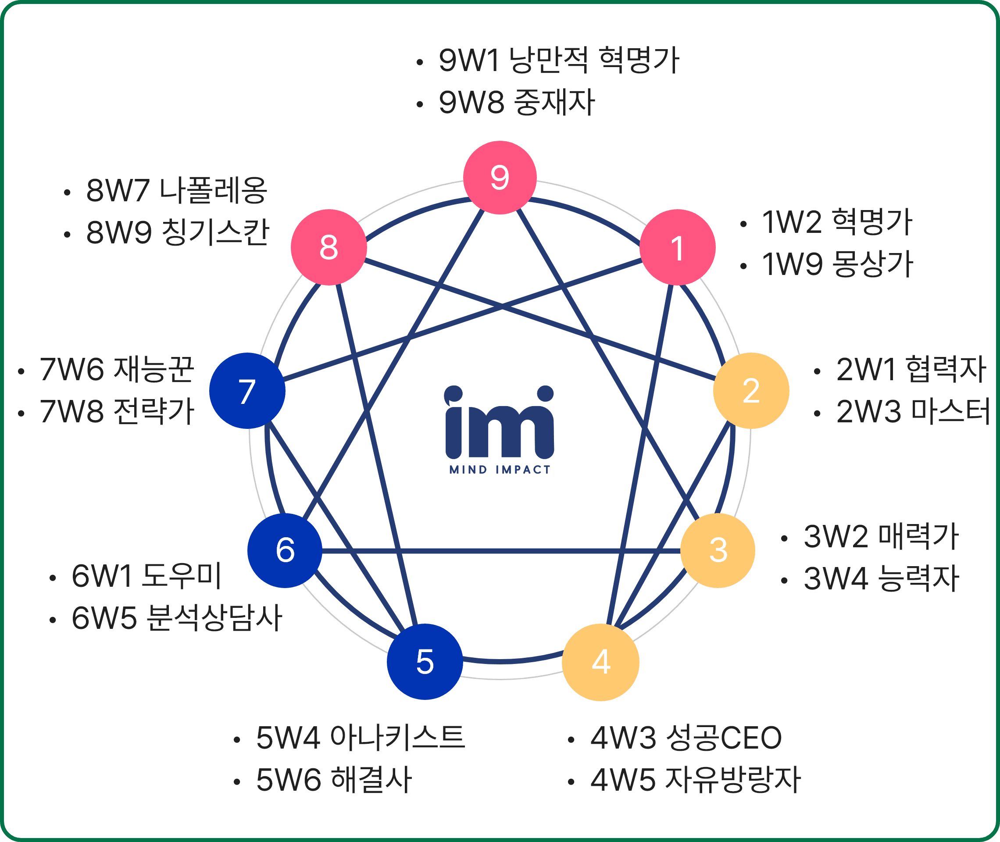
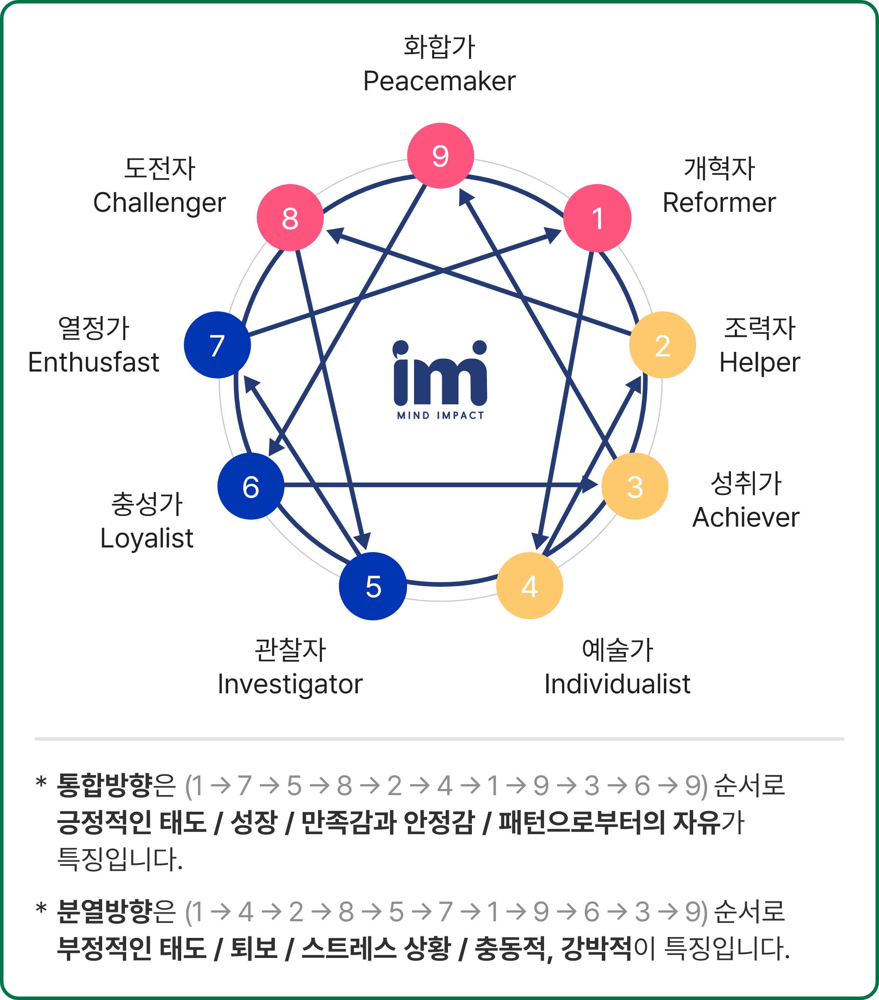

23
힘의 균형과 날개
03. 힘의 균형과 날개 & 화살
힘의 균형, 그 날개와 화살
당신이 어떤 유형이든 우리는 원래 우리가 가지고 태어난 것의 한계가 있고 넘지 못할 선이 있으며 이미 왜곡된 무언가로 만들어 버린 경우들도 있습니다. 우리 자신은 완전함을 위해 만들어졌지만 인생을 통한 경험들은 우리를 수비적으로 만들거나 거친 행동을 하게 압박을 줍니다.
우리가 사용하는 힘의 중심은 자신이 그동안 어떤 길을 선택해 왔는지 자각하려고 하는 사람들에게 지도를 제시해 주며, 앞으로 더욱 완전한 존재가 되기 위해 택해야 하는 전환의 길을 보게 해 줍니다.
‘날개’가, 자신에게 주어진 상황과 환경에 적응하기 위한 내면 에너지의 활용이라면, ‘화살표’ 방향은 저항을 극복하는 움직임을 표현합니다. 우리는 날개와 화살표를 이해하고 내면에서 일어나는 저항을 극복하여 자신의 삶을 보다 성숙하게 통합하는 방향으로 나아갈 수 있어야 합니다.
통합방향
내면의 의식을 통합하는 지점으로 의식적인 성찰과 올바른 자아 인식에서 비롯됩니다. 이는 긍정적인 노력의 결과로 다양함을 포용할 수 있습니다.
분열방향
내면의 의식을 돌보지 않거나 저항과 집착이 강할 때 이 같은 성격의 틀이 강화됩니다. 자신과 타인에게 부정적이며 충동적이고 퇴행적일 수 있습니다.
날개(wing) 그래프
날개란, 자기 유형의 양 옆에 위치한 유형을 말하며 성격을 균형 있게 발전하도록 돕는 역할을 합니다. 잠재력을 개발할 수 있는 가능성의 영역이기도 합니다.
화살(arrow) 그래프
화살표의 각 유형은 통합의 방향과 분열의 방향으로 나아갑니다. 통합의 방향은 나의 힘과 에너지를 더욱 강하게 만들 수 있는 협력자 유형이며, 분열의 방향은 나의 힘과 에너지를 소진시키는 소진형 유형입니다. 우리는 살아가면서 나의 통합 유형의 에너지를 발견해야 할 것이며 분열의 유형은 잘 피해가야 할 것입니다.